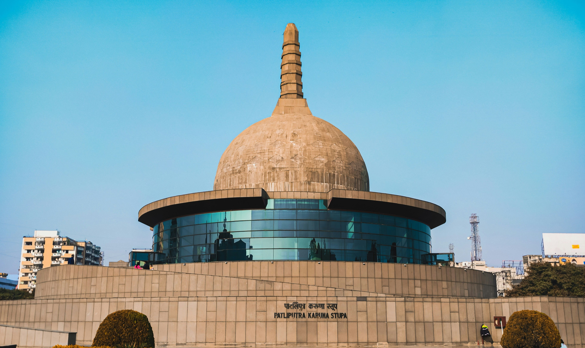

Patna
Patna, the modern heart of Bihar, sits atop the legendary foundations of ancient Pataliputra, once the most powerful capital in the world. As you walk through this bustling city, you can explore the towering, beehive-shaped Golghar for a panoramic view of the holy Ganges River. From the sacred Takht Sri Patna Sahib to the treasures of the Patna Museum, the city is a vibrant tapestry of faith and history. It is a place where the grandeur of the Mauryan Empire meets the energy of modern India, offering a perfect starting point for your heritage journey.